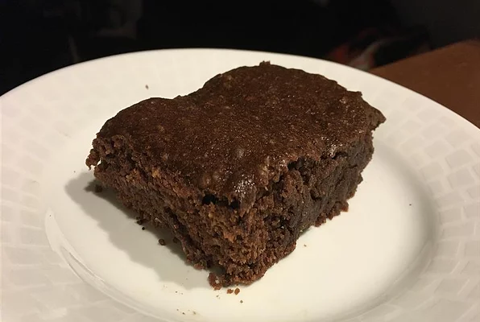

Coconut Brownies

Description
These brownies are for the vegans who love anything coconut.
Ingredients
- 1 cup virgin coconut oil
- 1 cup unsweetened almond-coconut milk blend
- 1 teaspoon vanilla extract
- 2 cups raw sugar
- 2 cups all-purpose flour
- ¾ cup unsweetened cocoa powder
- 1 teaspoon baking powder
- 1 teaspoon sea salt
- ⅓ cup shredded coconut
Steps
- Preheat oven to 350 degrees F (175 degrees C).
- Place coconut oil in a microwave-safe bowl; heat in the microwave until melted, about 1 minute.
- Stir in milk blend and vanilla extract until thoroughly mixed.
- Mix sugar, flour, cocoa powder, baking powder, and sea salt together in a large bowl.
- Pour in coconut oil mixture; mix until batter is thick and blended.
- Fold in shredded coconut.
- Spread batter evenly into a 9x13-inch baking dish.
- Bake in the preheated oven until a toothpick inserted into the center comes out clean, 25 to 30 minutes.
- Let cool for 15 minutes before cutting into squares